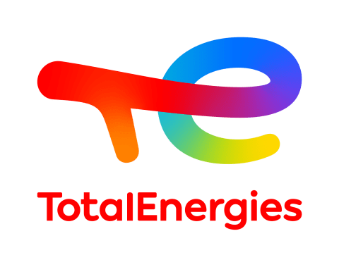
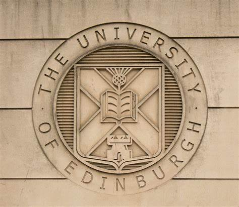

{
Hello there! Welcome to my personal space where I've chronicled my professional journey.
Here, you can find a detailed rundown of my experiences and the milestones I've achieved
along the way. As you scroll down, you will unveil the pathway I've carved through dedication
and hard work. I hope this timeline not only serves as a testament to my commitment and skill
set but also gives you an insight into who I am both professionally and personally. Enjoy your
stay, and feel free to reach out if you'd like to know more!
}

{
AUGUST 2023
I am currently working towards my bachelor's degree in Electrical and Electronics Engineering.
Recently, I was thrilled to be chosen from more than 900 applicants for an exchange program at
the top-ranked university in Asia, the National University of Singapore (NUS). This selection is
not just a nod to my academic efforts so far but also a golden ticket to dive deeper into my field
surrounded by the best minds in the industry.
Moving 15,000 kilometers away from home is a big leap, but my love for learning and curiosity about
new cultures made it an easy decision. Being in Singapore for a whole year gives me a fantastic
opportunity to grow personally and professionally. I look forward to making the most of what NUS
has to offer and embracing the rich learning experiences that await me there.
]
}
.png)
{
JUNE 2023 - JULY 2023
"Company": "TotalEnergies",
"Role": "Data Analyst",
"Responsibilities": [
"Researched and analysed client behaviour transitions in electricity and gas between regulated
and free market environments, leveraging SAS-Guide, to inform target marketing strategies aimed
at enhancing client satisfaction and retention.",
"Constructed compiled comprehensive sales reports covering the last 5 years by integrating data
from CNMC sources into MS Power BI, utilizing DAX functions for advanced data modelling and
visualization.",
"Presented MS Power BI findings and insights to the managerial department, accompanied by a
detailed report of conclusions, contributing to data-informed decision making and strategic planning
within the organization."
]
}

{
SEPT 2022 - MAY 2023
"Company": "Edinburgh University Fomrula Student (EUFS)",
"Role": "Data Analyst",
"Responsibilities": [
"Engineered the entire DC Link Box for the FS-AI car from scratch as an active contributor to
the Formula Student program, serving as a key member of the Powertrain team.",
"Demonstrated strong project management skills by setting and adhering to deadlines and
coordinating team meetings, fostering a cohesive and efficient team environment.",
"Liaised with various companies to procure essential components required for the design,
showcasing my effective communication and negotiation skills."
"Formula Student 2023 Awards: Competed on a global scale against universities worldwide,
obtaining: FS-AI Class Real World AI Winner, FS-AI Overall Dynamics Events Winner, FS-AI Sprint
Winner, FS-AI Trackdrive Winner and FS-AI Skid Pad Winner."
]
}

{
SEPT 2022 - MAY 2023
During my time working at the Spanish Society (SpanSoc) at the University of Edinburgh,
one of the largest international societies in the institution, I had the enriching opportunity
to immerse myself in the vibrant and diverse world of Spanish culture. Being part of a committee
constituted by 12 passionate undergraduate students, I found myself continuously inspired and
motivated to foster a sense of community and belonging among our over 200 associates and members.
Whether we wereorganizing exhilarating reggaeton parties, engaging in sports tournaments, or
channeling the essential Spanish festive spirit through various club nights, every event was a
canvas of joy, learning, and culturaL exchange.
It was an invigorating experience to work closely with different cultural and sports societies,
as we curated a space where every individual, irrespective of their background, could celebrate
and appreciate the Spanish culture in its full glory. I took great pride in helping facilitate
an environment where people could not only revel in the Spanish traditions but also create
everlasting memories and forge lifelong friendships. It was not just about the grandeur of the
events, but the smiles we brought to faces, the understanding we fostered, and the family we built
away from home, showcasing the warm and welcoming spirit of the Spanish culture.
]
}

{
AUGUST 2022
"Company": "Grupo Intermark",
"Role": "Software Developer",
"Responsibilities": [
"Developed a customized web scraping algorithm utilizing CSS selectors and Python to automate
the comprehensive research of all
50 Spanish provinces, enabling data-driven political campaign strategies",
"Adapted to a fast-paced environment while rapidly acquiring and implementing new techniques
and skills.",
"Enhanced both verbal and written communication abilities through collaborative work with professional
developers, establishing productive working relationships with external stakeholders and sponsors."
]
}
{
JUNE 2022
Last year, I went to Fort Portal in Uganda to help out with Volcop ONG. A big part of my job
was helping to build a community center so local kids can go to school. I also spent time at
orphanages, taking care of the children there. Apart from that, I had the chance to teach maths,
English, and geography at a local school. Every day was a lesson in being strong, keeping hope
alive, and working together as a community. The kids I met were full of spirit and taught me
that kindness can speak louder than words and can bring people together, no matter where they
are from.
]
}

{
SEPT 2021 - PRESENT
I am thrilled to have joined the University of Edinburgh, renowned as one of the top universities
globally, to pursue my bachelor's degree in Electrical and Electronics Engineering. The privilege
of studying in such a prestigious institution not only fills me with immense pride but also fuels
my aspiration to reach unprecedented heights in my career. I am confident that the knowledge and
skills acquired during my tenure here will be instrumental in helping me achieve my long-term goals.
I eagerly look forward to the remarkable journey ahead, enriched with learning and opportunities
that will pave the way for a successful future.
]
}
